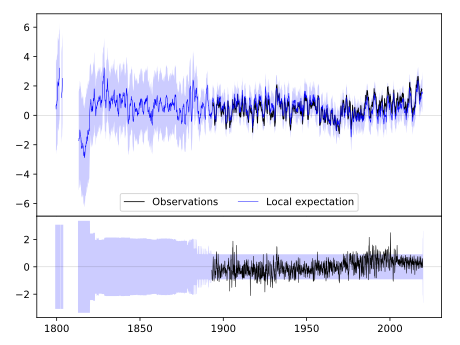
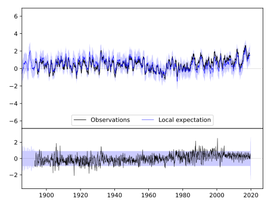

AIKEN 5SE [USA]



| Neighbour | Name | Country | Distance | Lon/Lat | Years |
|---|
| 720463 | AIKEN 5SE | USA | 0 | -81.7, 33.5 | 1893-2019 |
| 720465 | BLACKVILLE 3 W | USA | 38 | -81.3, 33.4 | 1884-2019 |
| 720072 | MILLEN 4 N | USA | 72 | -82.0, 32.9 | 1882-2019 |
| 720473 | NEWBERRY | USA | 89 | -81.6, 34.3 | 1887-2019 |
| 720472 | GREENWOOD | USA | 90 | -82.2, 34.2 | 1884-2019 |
| 720477 | WINNSBORO | USA | 114 | -81.1, 34.4 | 1887-2019 |
| 720466 | CAMDEN 3 W | USA | 120 | -80.7, 34.2 | 1893-2019 |
| 720474 | SANTUCK | USA | 123 | -81.5, 34.6 | 1891-2019 |
| 720464 | ANDERSON | USA | 144 | -82.7, 34.5 | 1884-2019 |
| 720071 | MILLEDGEVILLE | USA | 146 | -83.2, 33.1 | 1878-2019 |
| 720475 | SUMMERVILLE 4W | USA | 150 | -80.2, 33.0 | 1893-2019 |
| 720478 | WINTHROP UNIV | USA | 168 | -81.0, 34.9 | 1893-2019 |
| 720467 | CHARLESTON CITY | USA | 184 | -79.9, 32.8 | 1823-2019 |
| 720476 | WALHALLA | USA | 185 | -83.1, 34.7 | 1884-2019 |
| 720471 | DARLINGTON | USA | 188 | -79.9, 34.3 | 1893-2019 |
| 720068 | EASTMAN 1 W | USA | 201 | -83.2, 32.2 | 1882-2019 |
| 720393 | HENDERSONVILLE 1 NE | USA | 210 | -82.4, 35.3 | 1879-2019 |
| 720468 | CHERAW | USA | 212 | -79.9, 34.7 | 1882-2019 |
| 720469 | CONWAY | USA | 242 | -79.1, 33.8 | 1888-2019 |
| 720401 | MORGANTON | USA | 244 | -81.7, 35.7 | 1879-2019 |